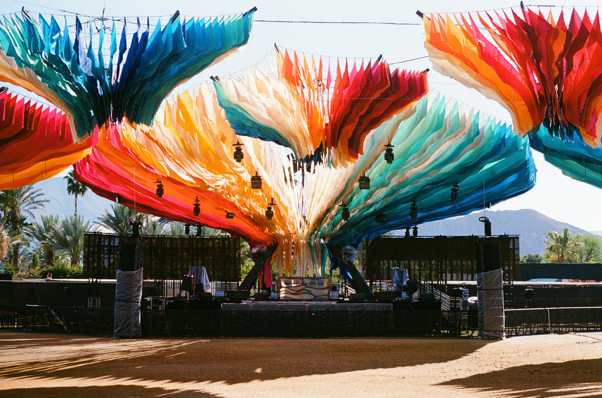
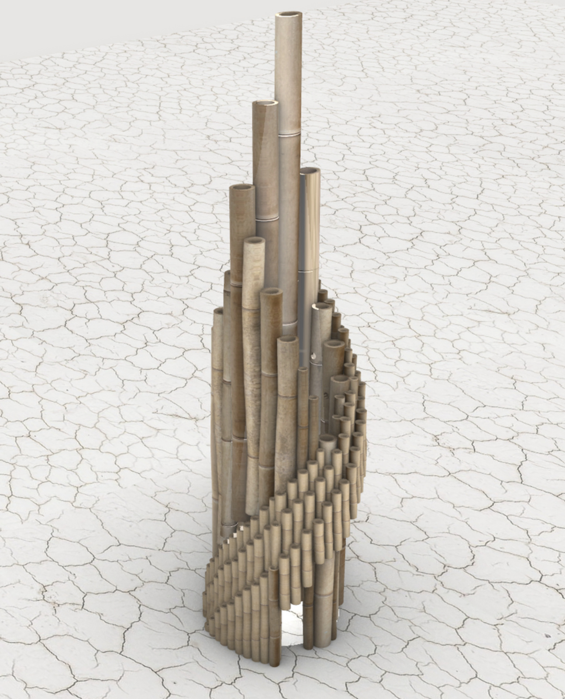
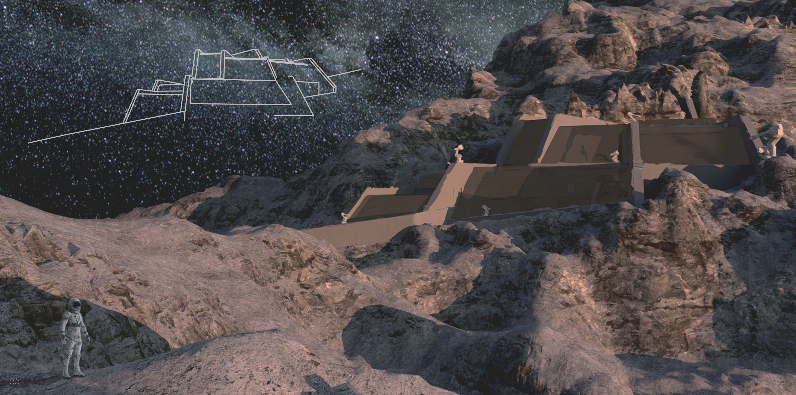
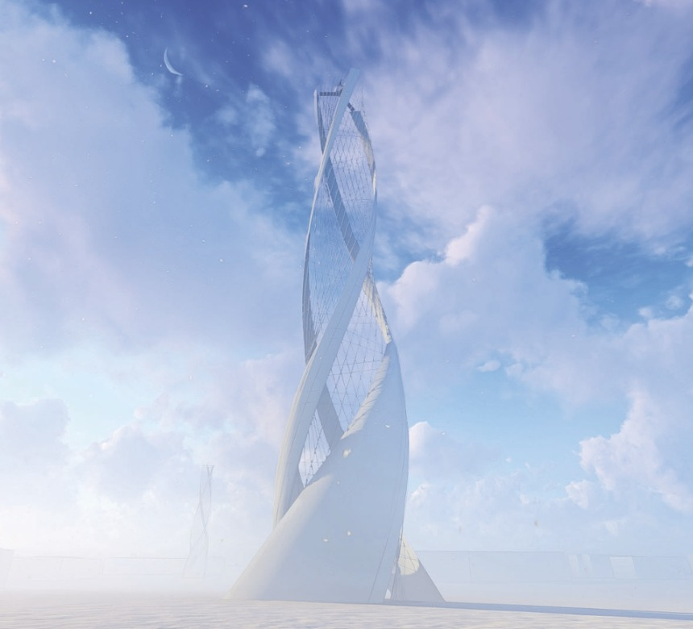
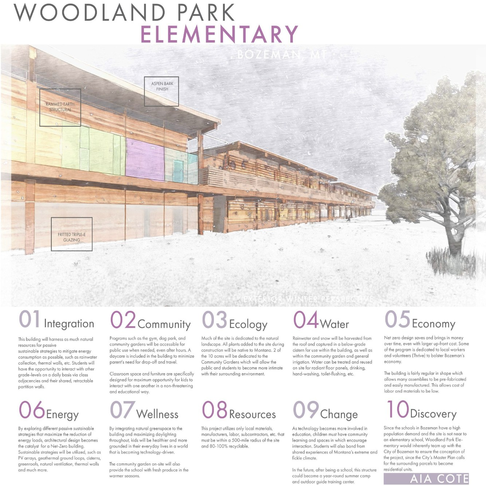
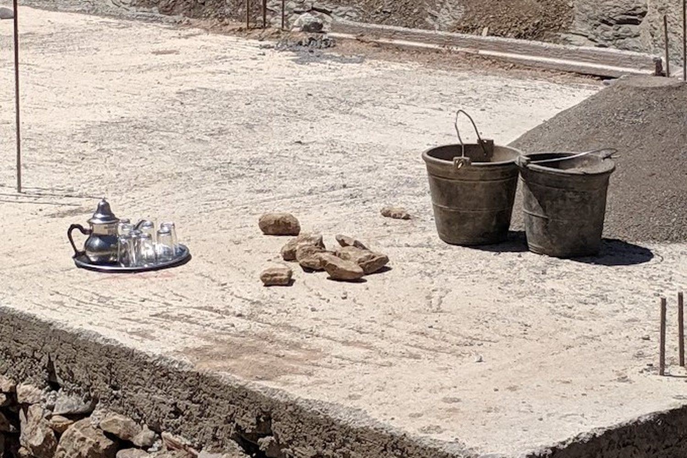
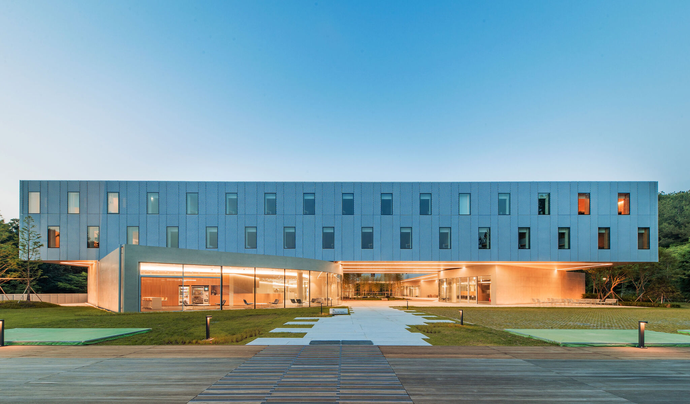
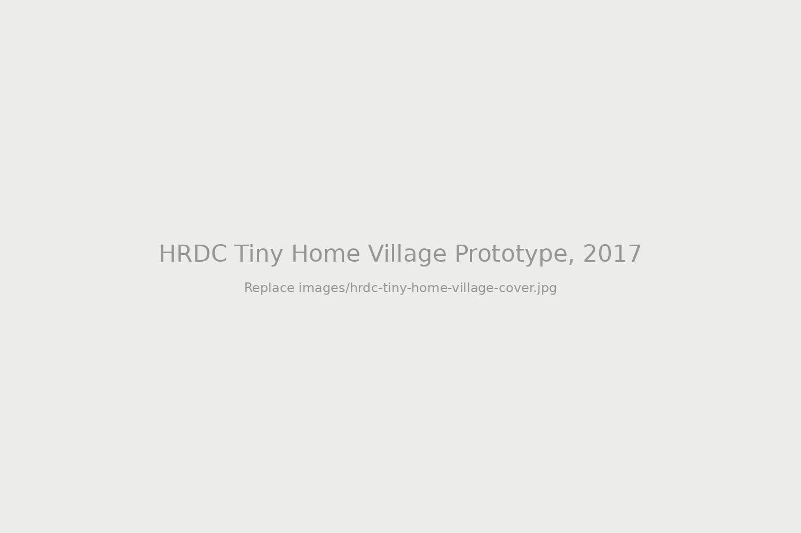
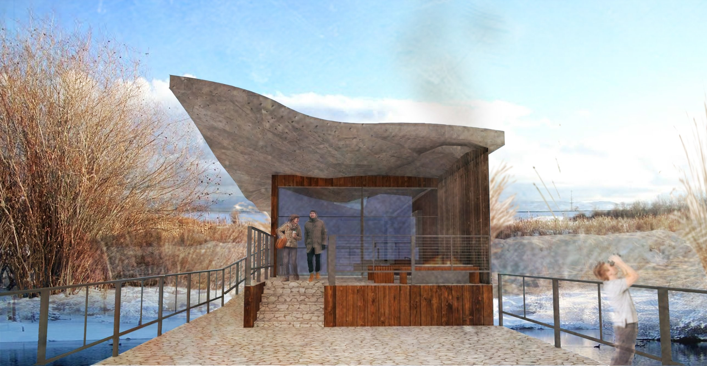

Open bookletMACROdose Stage at Coachella, 2024
The Woogie is Do LaB’s long-running house and techno stage. MACROdose is its colorful, trippy, 360-degree environment, built from nine sprawling fabric “mushroom” structures. Do LaB debuted the design at Coachella 2024 as their standalone stage, then moved the same structure to Lightning in a Bottle as the new look for The Woogie.

Open bookletAuris Interna, 2023
Write a short description of Auris Interna here. Edit this text in architecture.html.
Credits
Credits to be added.

Open bookletCERESOMA, 2021
CERESOMA is a lunar research facility designed as Calderwood’s Master’s thesis, built around the psychosocial strain of living in isolated and confined environments: boredom, isolation, confinement and deprivation. Dynamic architectural forms, layered space and algal systems stimulate the mind and body to keep them connected. The proposal was submitted to a competition by the Moon Village Association and Yuzhnoye State Design Office, Ukraine’s top aerospace engineering company, which selects the best technical concepts for a permanent human presence on the Moon, with expert mentorship for the winners.
Credits
Credits to be added.

Open bookletHydrocache Hub, 2020
Conceived in the collaborative graduate studio with LMN and the School of Architecture at Montana State University, this solo project harvests water vapor from the atmosphere and creates reserves for Montana’s increasing drought problem.
Credits
Credits to be added.

Open bookletWoodland Park Elementary School, 2019
An AIA COTE project that creates a net-zero elementary school for Bozeman, Montana. Ten sustainability strategies guide the design: a rammed earth structure with aspen bark finishes and fritted triple-E glazing, rain and snow harvested into a below-grade cistern, and two of the ten acres given to community gardens. The gym, dog park and gardens stay open to the public after hours, so the school works as a shared hub for the neighborhood as well as a place to learn.
Credits
Credits to be added.

Open bookletSuq at Zouwiat Ahansal, Morocco, 2019
Write a short description of Suq at Zouwiat Ahansal, Morocco, 2019 here. Edit this text in architecture.html.
Credits
Credits to be added.

Open bookletHyundai Cheonan Global Learning Center, Cheonan, South Korea, 2018
The project was spearheaded by firm founder Byoung Cho, who is considered South Korea’s most important architect, and partner Jihyun Lee. Calderwood worked alongside them as part of the core design and production team during this era as a Designer for BCHO Architects Associates.
Credits
PROJECT: Hyundai Cheonan Global Learning Center
LOCATION: Cheonan, South Korea
ARCHITECT: BCHO Architects Associates (BCHO Partners)
PRINCIPAL-IN-CHARGE: ByoungSoo Cho
PARTNER-IN-CHARGE: Jihyun Lee
PROJECT TEAM: Direct Production, Design, & Drafting Credits
- Katana Calderwood (Kate Calderwood)
- Nicholas S. Groh
- Youngjin Kang
- Taehyun Kim
- Minook Kim

Open bookletHRDC Tiny Home Village Prototype, 2017
Montana State University School of Architecture students (including Katana) partnered with the Warming Center of Human Resource Development Council (HRDC) to design and build a 150-square-foot tiny home prototype designed to address Bozeman’s growing homelessness crisis. This project serves as the blueprint for “Griffin Village,” a planned community of 37 tiny houses that aims to provide affordable, dignified housing solutions. By bridging the gap between academic design and hands-on construction, the initiative allowed students to tackle real-world social challenges while providing the community with a functional, research-backed model for sustainable urban living. The initial tiny home was considered a ‘smart home’ equipped with Home Assistant, among other technology, to detect CO2 levels, energy usage, dew-point, air quality, and much more. After being built, one of the architecture students lived in the home for a few months to test the efficacy of the structure for future iterations. (project 451 Arch)
Credits
Credits to be added.
Belgrade Library Renovation, 2016
In 2015, the Belgrade Community Library was named the Best Small Library in America by Library Journal. Katana was one of eight Montana State University architecture students who worked on the Community Design Center (CDC) plans for the Belgrade Community Library expansion. Alongside her classmates, she built the conceptual models and schematic drawings that helped kick off the community’s fundraising. That student vision laid the groundwork for the $22 million library and community center now open at 205 E. Main St. The architecture firm 45 Arch carried out the renovation and expansion in 2025.
MSU NewsLibrary Journal ILibrary Journal II
Credits
PROJECT: Belgrade Community Library Expansion
LOCATION: Belgrade, Montana
ARCHITECT: 45 Arch
PROGRAM: Montana State University School of Architecture, Community Design Center (CDC)
STUDENT DESIGN TEAM: Conceptual Models & Schematic Drawings
- Katana Calderwood (Katie Calderwood)
- Darren Brown
- Shane Caye
- Chaundra Monical
- Jacob Ryan
- Colin Tippett
- Andrew Wagenblast
- Emilee Williams

Open bookletCherry River Wildlife Observatory, 2015
Cherry River Wildlife Observatory is a fly-fishing education and nature center in Bozeman, Montana, shaped by the water around it. Its roof starts out smooth, like the park’s still ponds, then ripples and flows like the river. A ramp leads visitors through the building to a cantilevered deck over the water, where fishers can cast straight from the end. A communal fireplace keeps the center in use through the winter.
Credits
ARCHITECTURAL DESIGNERS: Katana Calderwood, Alyssa Parsons, and Kelli Littleton